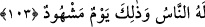

103. İşte bunda âhiret azâbından korkanlar için elbette bir ibret vardır. O gün
bütün insanların toplandığı bir gündür ve o gün (bütün mahlûkâtın) hazır
bulunduğu bir gündür.
“İşte bunda âhiret azâbından korkanlar” yani ona îmân edip ikrâr edenler “için”
günahları sebebiyle helak olan ümmetler hakkında inen âyetlerde veya Allah’ın anlattığı
onların kıssalarında “elbette” apaçık “bir ibret” etkili bir öğüt “vardır.”
Âhirete inananlar, işledikleri kötülükler yüzünden öncekilerin başına gelen çetin
azaptan âhiret azâbının durumuna dâir deliller çıkararak ibret alacaktır. Âhireti inkâr
eden, âlemin fenâ bulacağını imkansız gören, her şeyi yapan ve seçip belirleyen bir
yaratıcının var olduğunu kabul etmeyen ve bütün bu vâkıaların helâke uğrayanların
günahları sebebiyle değil de astrolojik sebeplerden ileri geldiğine hükmeden kimse ise
böyle bir ibret almaktan son derece uzaktır. Kendileri de, sahip oldukları düşünceler de
mahvolsun!
Hâfız der ki:
Feleğin seyrine ve ayın devrine ihtiyâr yoktur
Cümlesi Dost’un ihtiyârına göre dönmektedir
“O gün” kıyamet günü “bütün insanların toplandığı” yani hesâba çekilip
yaptıklarının karşılığını görmek için öncekilerin de sonrakilerin de toplandığı “bir
gündür.” Âyette henüz gerçekleşmemiş olan bir kıyâmet günü hakkında “toplandığı”
denilmesi, bunun kesin olarak meydana geleceğine dikkat çekmek içindir.
“ve o gün” yani bütün insanların toplandığı kıyamet günü, bütün mahlûkâtın “hazır
bulunduğu bir gündür.” O gün yer ve gök halkı, hiç biri yok olmamak şartıyla
“durulacak yeri/mevkıf” görecektir. Bu bakımdan görülecek olan şey, bu mevkıftır.
Görenler, yani orada hazır bulunanlar ise tüm mahlûkâttır. Kendisinde görülen zaman
ise “kıyamet günü”dür.
Cuma, bayram, arefe, harp günleri ve sultanın geliş günü gibi önemli bir iş sebebiyle
ya da kendilerini ilgilendiren bir konu için insanların kendisinde toplanıp bir araya
geldiği zaman mânâsında “gün/yevm” kelimesinin ‘kendisinde hazır bulunulan zaman’
olarak vasfedilmesi doğru olur. Aynı şekilde “idrak edilen zaman” olarak da
vasfedilmesi mümkündür. Nitekim “Falanın gününü idrâk ettim, gördüm.” dersin. Âyette
kastedilen ise ‘kendisinde hazır bulunulan gün’ mânâsıdır. Çünkü bu mânâda o günden
korkutup çekindirme vardır. “İdrâk edilen gün” mânâsı burada geçerli değildir. Çünkü